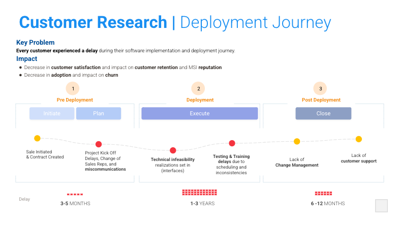
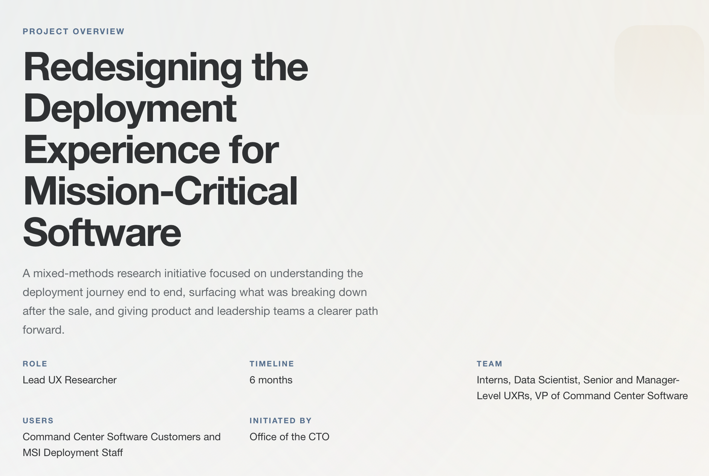
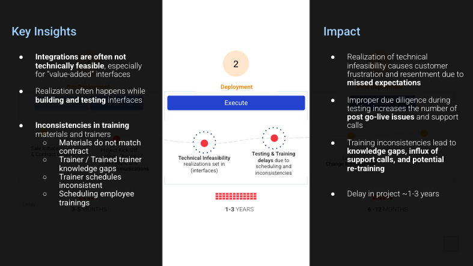
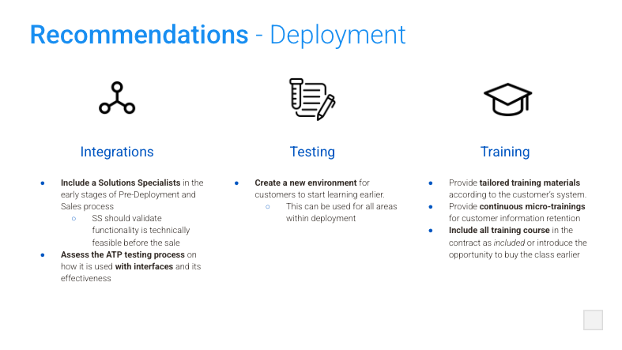

What was going wrong
The company lacked a clear understanding of the end-to-end deployment journey, which led to misaligned product decisions, unresolved pain points, and inefficiencies across the software lifecycle.
Project Overview
A mixed-methods research initiative focused on understanding the deployment journey end to end, surfacing what was breaking down after the sale, and giving product and leadership teams a clearer path forward.

Mapped across the deployment experience from contract to post-launch adoption.
UX recommendations delivered across onboarding, navigation, and support flows.
Identified for roadmap alignment, resource planning, and post-sales improvement.
The company lacked a clear understanding of the end-to-end deployment journey, which led to misaligned product decisions, unresolved pain points, and inefficiencies across the software lifecycle.

I used a mixed-methods approach so the team could understand not just where deployment was breaking down, but why.
The Process
I structured the work so each phase reduced uncertainty for the next one, from stakeholder alignment and participant recruitment through synthesis and delivery.
The most valuable outcome of the research was not a single issue. It was a clearer picture of where the experience broke down across product, process, and support.
"I love the software's features, but navigating between them feels like a maze."User 27, Interview
"The onboarding process was overwhelming. I felt lost and didn't know where to start."Participant 3, Focus Group
Navigation confusion repeatedly surfaced after deployment, especially once users moved beyond initial setup.
Product, deployment, and customer success were not handing off information in ways that felt clear to users.
Users relied on tribal knowledge and informal support, which pointed to deeper usability and adoption issues.
Documentation often failed to reflect real workflows, reducing confidence during deployment and onboarding.
Business Impact
The research gave teams a shared, evidence-backed view of the deployment experience and a clearer set of priorities to act on.
Recommendations delivered to improve onboarding, navigation, and documentation.
Strategic focus areas identified for roadmap and experience alignment.
Shared journey map used to create clearer visibility across post-sales teams.
Internal deployment resources were better targeted, reducing time-to-deploy.
This report brought the research together into a form leaders and cross-functional teams could act on, making the experience issues, evidence, and next steps easier to align around.



What I’d do differently: